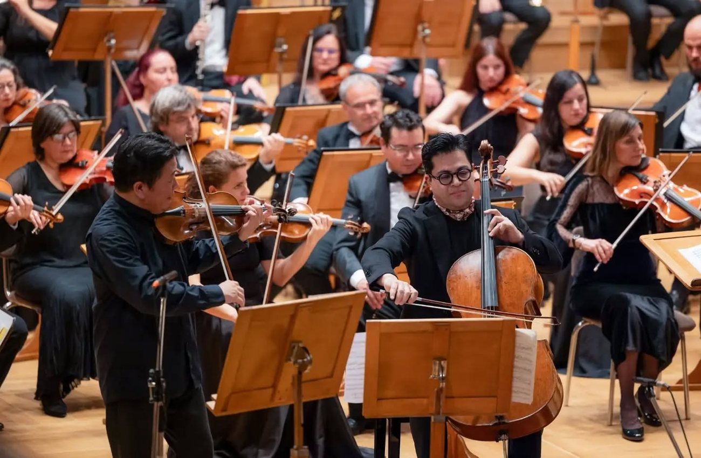
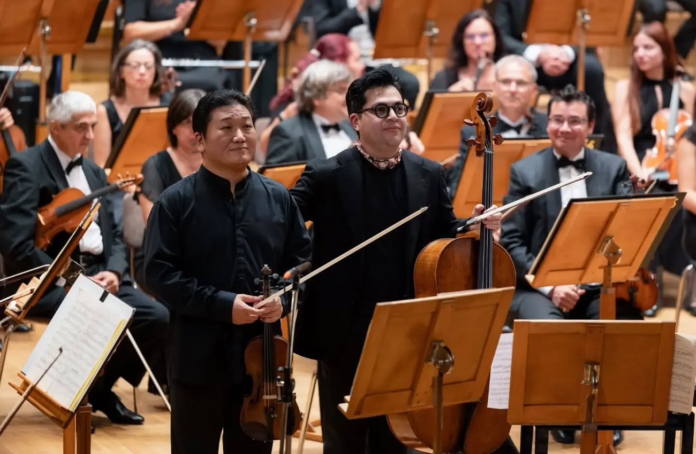

Sofia — On September 17, the Sofia Philharmonic Orchestra, under the baton of conductor Emil Tabakov, presented an evening dedicated to Johannes Brahms at Bulgaria Hall in Sofia, Bulgaria. The concert featured Korean violinist Edwin E.S. Kim and Venezuelan cellist Gregorio Nieto as soloists, performing one of Brahms's late masterpieces.
The program consisted of two works: Brahms's Double Concerto for Violin, Cello and Orchestra in A minor, Op. 102, and Symphony No. 1 in C minor, Op. 68. With just a concerto and a symphony, the evening offered a focused exploration of Brahms's musical world.

A dialogue between violin and cello
Performing together on stage for the first time, Kim and Nieto brought their distinct tonal qualities and musical personalities into a compelling dialogue, capturing the very essence of the Double Concerto. The violin's clear, lyrical lines intertwined with the cello's rich, resonant tones, creating a relationship in which the two solo instruments complemented and expanded upon each other's musical ideas rather than competing for prominence.

The orchestra, meanwhile, went beyond the role of accompaniment, joining the soloists in shaping a large-scale, chamber-like musical dialogue that brought the work's distinctive character into sharper focus.
From dialogue to triumph
The second half of the concert featured Brahms's Symphony No. 1 in C minor, Op. 68. Rather than simply presenting two celebrated works by the composer, the program could be understood as a unified musical narrative, progressing from the themes of reconciliation and dialogue in the Double Concerto to the struggle and triumph embodied in the First Symphony. What began as a musical exchange marked by tension and harmony between two solo instruments expanded into a monumental symphonic structure, revealing the emotional depth and profound Romantic spirit characteristic of Brahms's music.
"Not merely the display of individual virtuosity, but the art of listening, responding, and creating something greater together."
On the essence of the eveningThe performance was particularly meaningful as it brought Korean violinist Edwin E.S. Kim together with the Sofia Philharmonic, one of Bulgaria's leading orchestras, to present a major work of the concerto repertoire on the European stage. The collaboration between Kim and Nieto, musicians from different artistic backgrounds, alongside Tabakov and the Sofia Philharmonic — both deeply experienced in the music of Brahms — offered a compelling reminder of the essence of music: not merely the display of individual virtuosity, but the art of listening, responding, and creating something greater together.